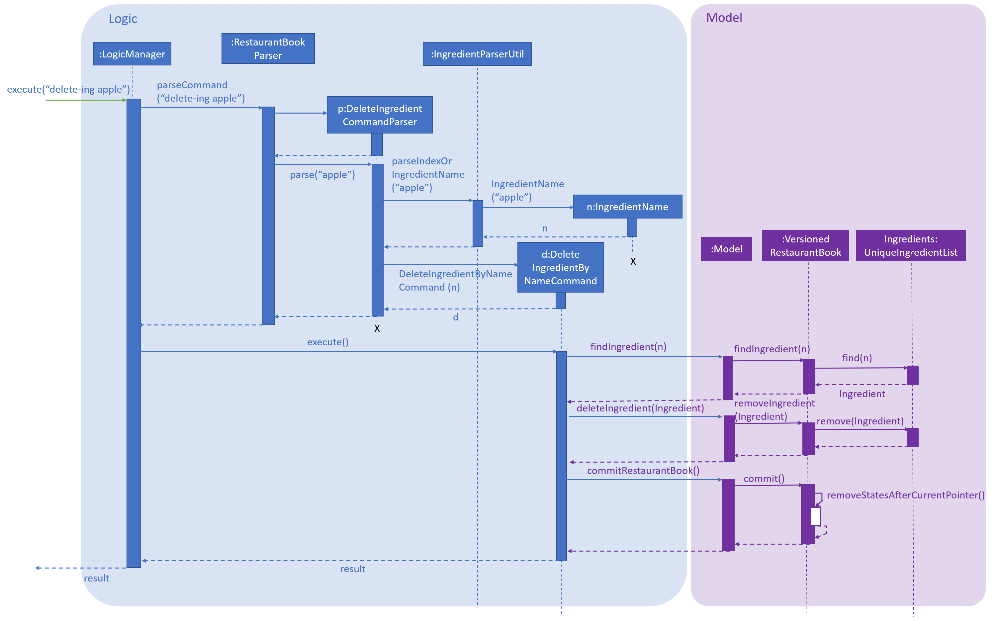

PROJECT: MeNUS
This project portfolio documents my contributions towards MeNUS for the module CS2103T Software Engineering.
Overview
MeNUS is an all-in-one restaurant management desktop application. It is designed for restaurant managers to manage their menus, ingredients, sales and reservations conveniently and effectively - all in one place. It provides a Command Line Interface (CLI) for restaurant managers to interact with, and has a Graphical User Interface (GUI) created with JavaFX. It is written with approximately 30 kLOC.
Summary of Contributions
Below are my contributions in terms of feature enhancements, project management and documentation:
-
Major enhancement: Added commands to keep track of the ingredient availability of a restuarant
-
What it does:
-
The
add-ingredient,delete-ingredient,edit-ingredientandlist-ingredientscommands allow the user to maintain a list of ingredients used by the restaurant. -
The
low-stockandstockupcommands enable the user to know which ingredients require stocking up and update the ingredient count as necessary. -
The
select-ingredientcommand lets the user view the details of each ingredient.
-
-
Justification:
-
Provide convenience: Restaurants use a large variety of ingredients daily, making it difficult to quickly determine the availability of each ingredient. This feature reduces the need for restaurant managers to manually do stock taking of its restaurant’s ingredients.
-
Reduce food wastage: Restaurants often stock up in fixed quantities of ingredients, regardless of the actual availability in the pantry. This leads to food wastage, if excess ingredients are not used. This feature provides restaurant owners with more information about availability, so that they only stock up what is necessary.
-
-
Highlights: This enhancement involves adding several new commands to MeNUS. It requires understanding of the underlying architecture and the components
logic,storageandmodel. To maintain good abstraction, it is also necessary to implement appropriate model interfaces so as to integrate the ingredient feature with other features eg menu and sales management.
-
-
Code contributed: RepoSense
-
Other contributions:
-
Project management:
-
Maintained issue tracker
-
-
Enhancements to existing features:
-
Enhanced the existing tagging feature by adding different colours for different tags
-
-
Documentation:
-
Updated user stories and use cases in the Developer Guide (Pull request #27, #118)
-
Added implementation of the commands
delete-ingredientandstockup(Pull request #116, #290) -
Added description of ingredient commands to the User Guide(Pull request #27, #116)
-
Made general enhancements to the User Guide (Pull request #120)
-
Created initial UI mock-up (Pull request #55)
-
-
Community:
-
Contributions to the User Guide
Given below are sections I contributed to the User Guide. They showcase my ability to write documentation targeting end-users. |
Ingredients Management
This section explains how you may use the commands relating to the Ingredient Management feature.
Adding an ingredient: add-ingredient or add-ing
Adds a new ingredient to the ingredient list.
Format: add-ingredient n/INGREDIENT_NAME u/UNIT_TYPE p/PRICE_PER_UNIT m/MINIMUM
|
Examples:
-
add-ingredient n/cod fish u/kilogram p/20 m/1
Adds the ingredientcod fishwith a price of$20/kilogramand minimum threshold of1 unit.
Listing all ingredients : list-ingredients or list-ing
Shows a list of all ingredients in the ingredient list.
Format: list-ingredients
Listing ingredients with low stock count: low-stock
Shows a list of ingredients that are low in stock count.
Format: low-stock
|
An ingredient is low in stock count when the number of units available is less than its minimum threshold |
Removing an ingredient: delete-ingredient or delete-ing
Deletes the specified ingredient from the ingredient list.
Format: delete-ingredient INDEX or delete-ingredient INGREDIENT_NAME
|
Examples:
-
list-ingredients
delete-ingredient 1
list-ingredients
Deletes the 1st ingredient in the ingredient list. -
delete-ingredient cod fish
list-ingredients
Deletes the ingredientcod fishfrom the ingredient list.
Editing an ingredient: edit-ingredient or edit-ing
Edits an ingredient in the ingredient list.
Format: edit-ingredient INDEX [n/INGREDIENT_NAME] [u/UNIT_TYPE] [p/PRICE_PER_UNIT] [m/MINIMUM] or edit-ingredient
on/ORIGINAL_INGREDIENT_NAME [n/NEW_INGREDIENT_NAME] [u/UNIT_TYPE] [p/PRICE_PER_UNIT] [m/MINIMUM]
|
|
At least one of the optional fields must be provided! |
Examples:
-
edit-ingredient 3 n/thin fries
Edits the name of the 3rd ingredient tothin fries. -
edit-ingredient 4 u/1.5ml bottle p/1.20
Edits the unit type and price per unit of the 4th ingredient to1.5ml bottleand1.20respectively. -
edit-ingredient on/ketchup n/tomato ketchup
Edits the name ofketchuptotomato ketchup.
Stocking up an ingredient: stockup
Increases the number of units of an ingredient or multiple ingredients.
Format: stockup n/INGREDIENT_NAME… nu/NUMBER_OF_UNITS…
|
Examples:
-
stockup n/cod fish nu/5
Stocks up5 unitsofcod fish. -
stockup n/chicken thigh nu/10 n/fries nu/20 n/tomato ketchup nu/50
Stocks up10 unitsofchicken thigh,20 unitsoffriesand50 unitsoftomato ketchup.
Selecting an ingredient: select-ingredient or select-ing
Selects the ingredient identified by the index number used in the displayed ingredient list.
Format: select-ingredient INDEX or select-ing INDEX
|
Examples:
-
list-ingredients
select-ingredient 2
Selects the 2nd ingredient in the displayed ingredient list. -
low-stock
select-ingredient 1
Selects the 1st ingredient in the results of thelow-stockcommand.
Contributions to the Developer Guide
Given below are sections I contributed to the Developer Guide. They showcase my ability to write technical documentation and the technical depth of my contributions to the project. |
Delete ingredient feature
This feature allows the user to delete an ingredient from the ingredient list, specified by its name or index.
Current Implementation
The delete ingredient mechanism is facilitated by DeleteIngredientCommand. It is implemented as an abstract class
with the following abstract methods:
-
DeleteIngredientCommand#execute()– Removes a specified ingredient from the list -
DeleteIngredientCommand#equals()– Checks if twoDeleteIngredientCommandinstances have the same attributes
DeleteIngredientByIndexCommand and DeleteIngredientByNameCommand extends DeleteIngredientCommand and implement
their own behaviour for these methods.
-
DeleteIngredientCommandByIndexCommand#execute()- Removes an ingredient specified by a valid index -
DeleteIngredientCommandByNameCommand#execute()- Removes an ingredient specified by a valid name
The following sequence diagrams illustrate how the delete operation works.
-
Diagram 1: When user enters
delete-ingredient 1
Figure 4.6.1.1: Component interactions for delete-ingredient 1 command
-
Diagram 2: When user enters
delete-ingredient appleFigure 4.6.1.1: Component interactions for
delete-ingredient applecommand
Design Considerations
Aspect: Implementation of delete ingredient command
Two different implementations were considered.
-
Alternative 1 (current choice): Separate classes to handle deleting by index and deleting by name.
-
Pros: Allows different attributes and method implementation for each class.
-
Cons: Tight coupling between
DeleteIngredientCommandand the inheriting classes
-
-
Alternative 2: Single class to handle deleting by both index and name.
-
Pros: Less coupling since the methods related to the delete ingredient command are confined to a single class.
-
Cons: Two attributes are required, but only one has a value while the other has to be set to
null. This makes theequals()method difficult to implement.
-
Stock up ingredient feature
This feature allows the user to stock up one or more ingredients in the ingredient list.
Current Implementation
The Stock Up mechanism involves mainly the StockUpCommandParser, StockUpCommand and the Model
interface. The StockUpCommandParser parses the command input from the user, creating a HashMap mapping
IngredientName keys to NumUnits values. This HashMap represents the ingredients to be stocked up, and their
respective stock up amounts. With this HashMap, the StockUpCommandParser creates a StockUpCommand object. The
StockUpCommand executes the stock up operation, which is exposed in the Model interface as
Model#stockUpIngredients().
| The operation is atomic, thus if it fails for one ingredient, none of the ingredients will be stocked up and an exception is thrown |
The following activity diagram shows what happens when the user executes the stockup command:
Figure 4.7.1: Flow of events after a user executes the stockup command
Design Considerations
Aspect: Implementation of Stock Up command
Two different implementations were considered.
-
Alternative 1 (current choice): Create a stock up operation exposed in the
Model. A list of ingredients is passed as aHashMapargument to the model interface to perform the stock up on all ingredients.-
Pros: Maintains good abstraction. The sales feature can call upon the stock up operation of the interface without needing to know its implementation or creating any Ingredient objects.
-
Cons: Additional code has to be written and maintained, as opposed to using existing methods.
-
-
Alternative 2: Use the edit operation of the
Modelinterface exposed asModel#updateIngredient(). For each ingredient to be stocked up, a new ingredient with the updated number of units is created and then passed as an argument toupdateIngredient().-
Pros: Simple to implement, by using the existing
updateIngredient()method. -
Cons: Difficult to integrate different features while maintaining abstraction. The auto-update-ingredient feature would require the sales component to create each updated ingredient, before calling the
updateIngredient()method. This means poor abstraction and possibly a violation of the Law of Demeter.
-
Use case: UC202 - Delete ingredient
MSS
-
User requests to list ingredients.
-
App shows a list of ingredients.
-
User requests to delete a specific ingredient by its index in the ingredient list, or the ingredient name.
-
App deletes the ingredient.
Use case ends.
Extensions
-
2a. The list is empty.
Use case ends.
-
3a. The given index or name is invalid.
-
3a1. App returns a message telling user the index or name entered is invalid.
-
3a2. User requests to delete ingredient again.
Steps 3a1-3a2 are repeated until a valid index or name is entered.
Use case resumes at step 4.
-
-
3b. The ingredient name does not exist.
-
3b1. App returns a message telling user that the ingredient cannot be found.
-
3b2. User requests to delete ingredient again.
Steps 3b1-3b2 are repeated until an existing ingredient name is entered.
Use case resumes at step 4.
-
-
3c. The user enters an invalid format.
-
3c1. App returns a message telling user that the command format is invalid.
-
3c2. User requests to add ingredient again.
Steps 3c1-3c2 are repeated until a valid command format is entered.
Use case resumes at step 4.
-
Use case: UC203 - Edit ingredient
MSS
-
User requests to edit a specific ingredient.
-
App edits the specified ingredient with the updated values.
-
App returns a success message confirming the specified ingredient has been edited.
Use case ends.
Extensions
-
1a. The given index or name is invalid.
-
1a1. App returns a message telling user the index or name entered is invalid.
-
1a2. User requests to edit ingredient again.
Steps 1a1-1a2 are repeated until a valid index or name is entered.
Use case resumes at step 2.
-
-
1b. None of the optional fields are specified.
-
1b1. App returns a message telling user at least one optional field has to be specified.
-
1b2. User requests to edit ingredient again.
Steps 1b1-1b2 are repeated until at least one optional field is entered.
Use case resumes at step 2.
-
-
2a. The ingredient name does not exist.
-
2a1. App returns a message telling user that the ingredient cannot be found.
-
2a2. User requests to edit ingredient again.
Steps 2a1-2a2 are repeated until an existing ingredient name is entered.
Use case resumes at step 3.
-
Use case: UC204 - Stock up ingredient
MSS
-
User requests to stock up a specific ingredient.
-
App updates the count of the specified ingredient.
-
App returns a success message confirming the specified ingredient has been stocked up.
Use case ends.
Extensions
-
1a. The user enters an invalid format.
-
1a1. App returns a message telling user that the command format is invalid.
-
1a2. User requests to stock up ingredient again. + Steps 1a1-1a2 are repeated until a valid command format is entered. + Use case resumes at step 2.
-
-
2b. The ingredient name does not exist.
-
2b1. App returns a message telling user that the ingredient does not exist.
-
2b2. User requests to stock up ingredient again. + Steps 2b1-2b2 are repeated until a valid ingredient name is entered. + Use case resumes at step 3.
-